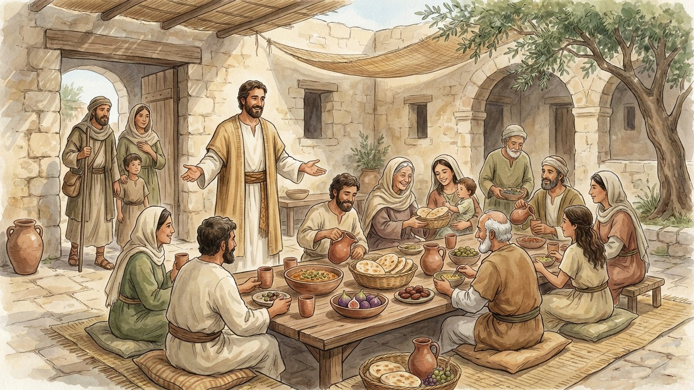
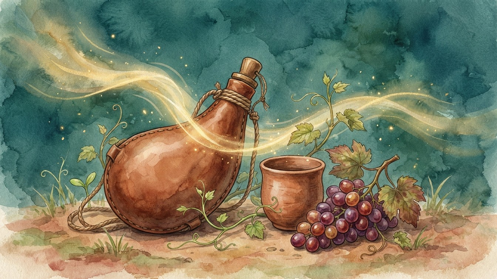

第 27 節｜耶穌看見利未，並呼召他跟從。
利未是稅吏，坐在稅關工作。稅吏常被同胞視為與羅馬政權合作，甚至藉職務牟利。耶穌沒有先要求利未證明自己值得接納，而是主動呼召他。
🌱 今日生活：教會裡也可能有人因過去的選擇、職業或名聲被貼上標籤。服事和關懷不只留給「看起來合適」的人；我們可以先看見對方、開啟真誠對話，也相信上帝能在人的生命中開始新工作。
從利未的蒙召，看見耶穌如何走近被排拒的人，也邀請我們在恩典中回應、同行與更新。
路加福音 5:27–39新標點和合本上帝版從古老聖經尋求現代生活智慧耶穌看見坐在稅關上的利未，呼召他跟從；接著與被視為罪人的人同席。當旁人質疑，耶穌說明自己來是呼召罪人悔改；最後以新衣、新酒和皮袋的比喻，提醒人上帝的更新需要敞開的生命來承載。
請在下方自行貼上《新標點和合本上帝版》經文：
利未是稅吏，坐在稅關工作。稅吏常被同胞視為與羅馬政權合作，甚至藉職務牟利。耶穌沒有先要求利未證明自己值得接納，而是主動呼召他。
這不是只在心裡認同耶穌，而是作出實際回應。稅關代表利未的工作和收入；跟從耶穌意味著生活方向改變。經文強調他願意回應呼召，不是人人都必須用同一方式放棄工作或家庭責任。
利未的回應很快延伸到生活圈：他把耶穌帶進家中，也讓熟識的人有機會接觸耶穌。筵席不只是社交聚餐，也顯出蒙恩的人願意分享所領受的恩典。

他們重視潔淨、群體界線和敬虔生活，也擔心與被視為罪人的人交往會損害信仰。耶穌親自回應，說明自己的使命。
醫生的工作是接近需要醫治的人。耶穌與被認為有罪的人同席，不是認同罪惡，而是臨到有需要的人。門徒也蒙召以真理和憐憫陪伴人。
耶穌指出他的使命臨到承認自己需要改變的人。悔改不只是懊悔，也包括回轉面向上帝，在生活中結出改變的果子。

禁食和禱告是重要操練；爭議在於是否把某種操練方式當成評斷別人敬虔的唯一標準。
耶穌的同在帶來上帝救恩臨到的喜樂；這時門徒的反應與哀傷時期不同。信仰不只有克己，也包含喜樂、感恩和團契。
耶穌沒有否定禁食，而是指出操練要配合時刻。新郎離去預示哀傷和等待，禁食便有合宜的位置。
新舊衣料質地不同，硬把新布補在舊衣上，可能使兩者都受損。上帝在耶穌裡帶來的更新，不是只在舊架構上加一小塊裝飾。
新酒發酵會膨脹，需要有彈性的容器。若容器沒有預備好，新酒帶來的力量反而造成損失；上帝的新工作也需要合宜的承載方式。
這不是說所有傳統都沒有價值，而是不要把上帝的工作限制在不再合用的形式裡。忠於福音、能造就人的傳統仍是祝福；若形式遮蔽福音，就需要更新。
熟悉使人安穩，因此人可能不願嘗試新的。耶穌提醒我們，可能因眷戀熟悉而拒絕辨認上帝正在做的新事；也不是把「新」本身當成正確標準。
🙏 結束禱告：求主幫助我們先領受恩典，再成為接納、陪伴與更新的群體。